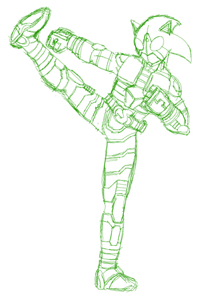
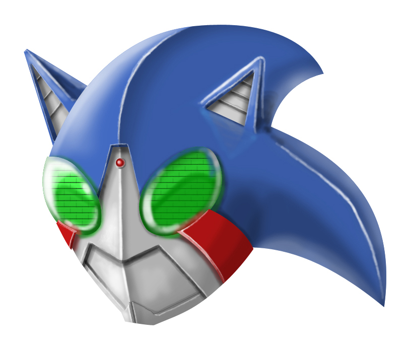
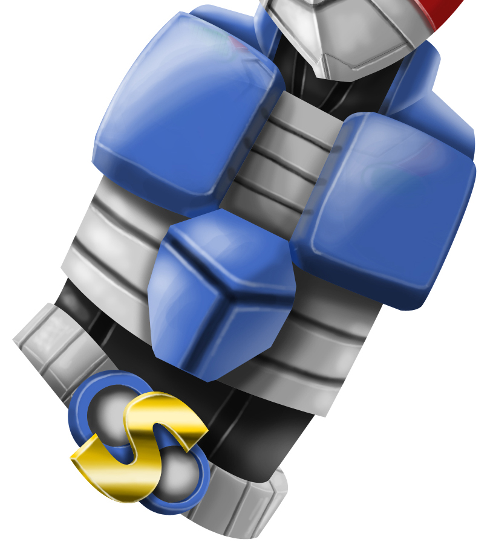

🏠 首頁
📁 同人畫作作品區
假面騎士SONIC之刻畫日記(完結)
👤 knight2002y
🕐 2010-03-24 09:56:31
本文章最後由 knight2002y 於 2010/3/31 02:55 PM 編輯
之所以叫做刻畫日記，是因為這張圖要花很久時間才會完畢……

附件: MRS001.jpg
第一張，看它被我畫得如此潦草，應該看得出是草稿……(被毆)

附件: MRS002.jpg
第二張，腦袋。唉呀，光是刻這個腦袋還真費工夫……(汗)
只有分開來才會知道位什麼第二張會花那麼久的時間，而且，全部完成的話，由於檔案大小的緣故，通常是看不到那麼細的地方。
一個腦袋就好幾個圖層了……
今天就先到此為止！(喂)
BY 憂鬱の深藍色
👤 knight2002y
🕐 2010-03-26 02:08:11
本文章最後由 knight2002y 於 2010/3/31 10:49 AM 編輯

附件: MRS003.jpg
今天進入PART2了！！
身體的部份～～
本來只是要從脖子畫到腹部，後來想一想，乾脆變身腰帶也把它畫進去好了。
因此，身體的圖層很意外的比頭部的圖層還多。(汗)
結論是，這張圖畫到完的時間，不知道可以畫多少張塗鴨……？
BY 憂鬱の深藍色
👤 knight2002y
🕐 2010-03-27 16:37:40
本文章最後由 knight2002y 於 2010/3/31 10:49 AM 編輯
[附件 3512 未找到]
進入了PART3，右腳的部分。
這部分的圖層也是多得嚇人，絕不輸給身體的部分。
腿絕大部分都是金屬部分，黑色的地方，大概就類似潛水衣的材質。
photoshop的版本不同，畫得還真難過……
哪天家裡的版本應該要更新……= =
只剩下另一條腿和兩隻手就完成了，加油！！
BY 憂鬱の深藍色
👤 shadow27080046
🕐 2010-03-27 16:40:16
3#
knight2002y
深藍 加油...：P
👤 knight2002y
🕐 2010-03-30 05:26:58
[附件 3516 未找到]
PART4。
這次是左腳的部份。
沒什麼意外，圖層多於右腳……(汗)
眼看這張圖的檔案大小愈來愈大，就一種刺激感。(啥？)
目前檔案大小約13MB，不知道這張圖完全刻完時會不會突破20MB呢？
只剩下兩隻手了……
BY 憂鬱の深藍色
👤 knight2002y
🕐 2010-03-31 02:54:08
本文章最後由 knight2002y 於 2010/3/31 02:53 PM 編輯
[附件 3517 未找到]
PART5，左手臂的部份。
很意外的，圖層是所有部份裡最少的！XD
所以很快就完結了。
只要再一隻手，就算是完結了。W
[附件 3518 未找到]
PART6，右手幣的部份。
因為和左手一樣好畫，所以很快就結束了。
接著，就是全身圖了！XD
[附件 3519 未找到]
因為斷斷續續地在畫，所以耗費了不少時間呢！(茶)
總算是刻完了～～！W
真是可喜可賀可喜可賀啊！
BY 憂鬱の深藍色